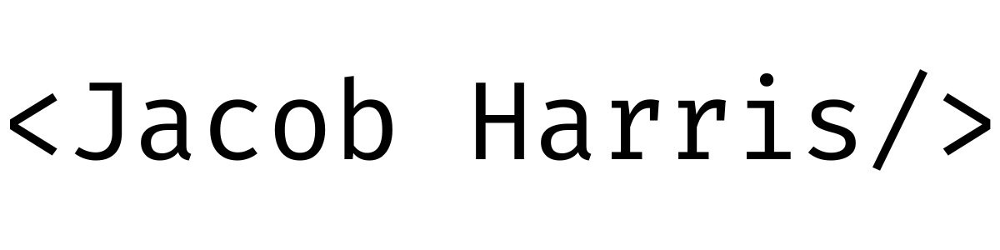

Real time crowd and safety insights for public spaces
During my internship, I worked on Krowd Guide, a platform that helps people navigate public spaces with real-time information about crowd levels, parking, atmosphere, and safety. As part of a five-person Agile engineering team, I focused primarily on backend development and data integration, connecting Supabase services to the FlutterFlow application.
My goal was to make machine-learning-generated data from external sources useful in the app. I designed and deployed three PostgreSQL tables and implemented secure, reusable Supabase APIs and database functions that exposed structured information, including zones and time-based crowd patterns. I also connected backend services to FlutterFlow so the frontend could query and display data across more than 600,000 rows.
One of the main challenges was making pre-existing database tables easier to maintain and scale. Some tables duplicated information and used separate keys for the same entities, which made relationships harder to follow. I helped reorganize the schemas with more consistent keys and clearer primary-key relationships, refined data types, and made queries more reusable. This reduced redundancy, improved data integrity, and made it easier for the frontend team to work with the data as requirements changed.
This internship strengthened my fundamentals in backend development, relational data modeling, and API integration. I gained hands-on experience connecting Supabase logic to FlutterFlow with API calls and custom Dart actions, while coordinating query behavior and data structures with a five-person Agile team. It also taught me to document backend work, adapt to changing requirements, and build data systems with maintainability and scale in mind.